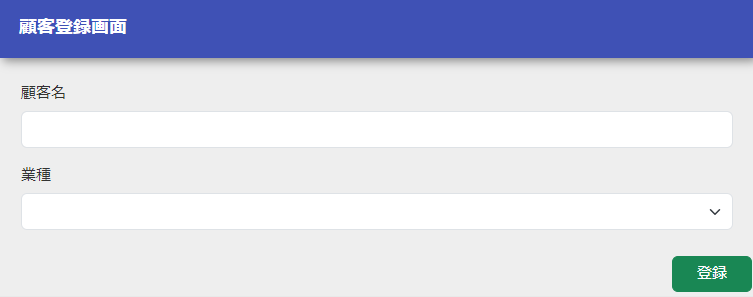
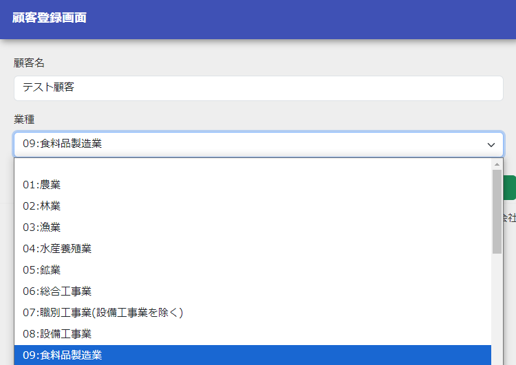

登録画面初期表示の作成¶
本章では、登録画面の初期表示について解説する。
- 登録画面のJSPを作成する
ひな形となるJSPを /src/main/webapp/WEB-INF/view/client 配下に配置する。
- 画面に初期表示する部分を実装する
create.jspに登録画面の内容を追加する。
- /src/main/webapp/WEB-INF/view/client/create.jsp
<n:form> <div class="row m-3"> <label class="col-md-2 col-form-label fs-5">顧客名</label> <!-- 顧客名のテキストボックス --> <!-- フォーム作成前なので、name属性には仮の値を指定する --> <div class="col-md-10 form-group"> <n:text name="tmp" cssClass="form-control form-control-lg"/> </div> </div> <div class="row m-3"> <label class="col-md-2 col-form-label fs-5">業種</label> <!-- 業種のプルダウン --> <!-- フォーム作成前なので、name属性には仮の値を指定する --> <div class="col-md-10 form-group"> <n:select listName="industries" elementValueProperty="industryCode" elementLabelProperty="industryName" name="tmp" withNoneOption="true" cssClass="form-select form-select-lg"/> </div> </div> <div class="button-nav"> <!-- 登録ボタン --> <!-- 登録内容確認画面は作成前なので、uri属性には仮の値を指定する --> <n:button uri="tmp" cssClass="btn btn-lg btn-success">登録</n:button> </div> </n:form>
- この実装のポイント
- Jakarta Server Pagesカスタムタグ を使用し、テキスト入力フォーム、プルダウンを作成する。 入力フォームを作る を参照。
- selectタグ の listName 属性に、 後述の初期表示メソッドでリクエストスコープに登録する業種リストの名称を指定し、プルダウンに表示する。 選択項目(プルダウン/ラジオボタン/チェックボックス)を表示する を参照。
- 業務アクションに初期表示メソッドを作成する
ClientAction に、以下の処理を行う業務アクションメソッドを追加する
- プルダウンに表示するデータを取得しリクエストスコープに登録する。
- 初期表示画面のJSPへフォーワードする。
- ClientAction.java
public HttpResponse input(HttpRequest request, ExecutionContext context) { EntityList<Industry> industries = UniversalDao.findAll(Industry.class); context.setRequestScopedVar("industries", industries); return new HttpResponse("/WEB-INF/view/client/create.jsp"); }
業務アクションメソッドのシグネチャは以下とすること。 業務アクションメソッドが以下のシグネチャを満たさない場合、404エラーが発生する。
-
public HttpResponse
methodName(HttpRequest request, ExecutionContext context)¶ パラメータ: - request – フレームワークから受け渡されるリクエストオブジェクト
- context – フレームワークから受け渡される実行コンテキスト
- return – 遷移先を設定したレスポンスオブジェクト
- この実装のポイント
- 登録画面に業種のプルダウンを表示するために、ユニバーサルDAO を使用してデータベースから業種情報を全件取得する。
- JSPへ値を受け渡すために、取得した業種リストをリクエストスコープに登録する。
- URLと業務アクションのマッピングを行う
マッピング処理はOSSライブラリである http_request_router(外部サイト) を使用して行う。 指定したURLと初期表示処理をマッピングするための設定を追加する。
- routes.xml
<routes> <!-- 上から評価されるので、他のマッピングより前に設定する --> <get path="/action/client" to="Client#input"/> <!-- その他の設定は省略 --> </routes>
補足
routes.xmlの指定方法は、ライブラリのREADMEドキュメント(外部サイト) を参照。
- 登録画面へのリンクを作成する
ヘッダメニューに顧客登録画面へのリンクを作成する。
- /src/main/webapp/WEB-INF/view/common/menu.jsp
<ul class="navbar-nav me-auto"> <!-- その他のリンクは省略 --> <li class="nav-item px-2"> <n:a href="/action/client" cssClass="nav-link">顧客登録</n:a> </li> </ul>
- この実装のポイント
- Jakarta Server Pagesカスタムタグ の aタグ を使用してリンクを作成する。
- 動作確認を行う
以下の手順で動作確認を行う。
- アプリケーションにログインし、ヘッダメニューに「顧客登録」リンクが作成されていることを確認する。
- 「顧客登録」リンクを押下すると顧客登録画面に遷移し、「顧客名」フォーム、「業種」プルダウン、登録ボタンが表示されていることを確認する。
- 「業種」プルダウンが選択できることを確認する。
